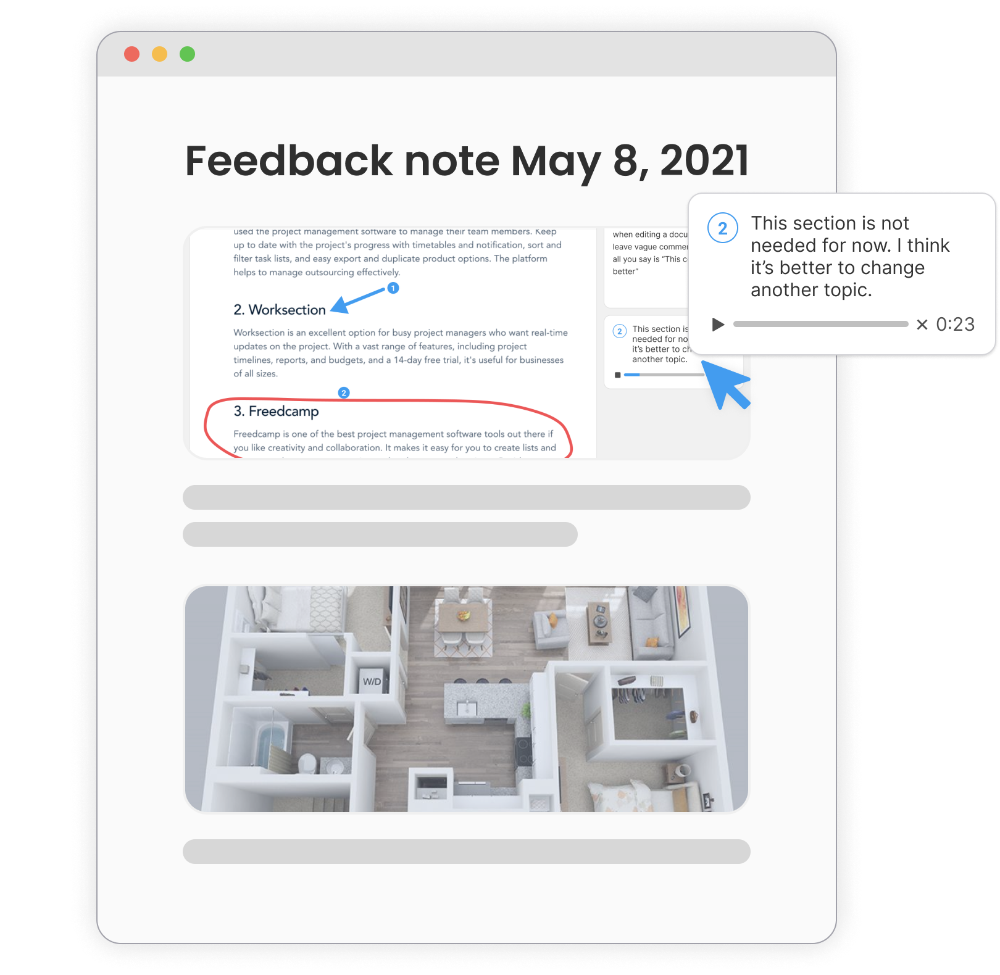

issuenote
외부팀과의 협업을 위한 피드백관리 솔루션
이슈노트는 다양한 피드백을 생성하고 테스크별 관리를 도와주는 비동기 협업 서비스입니다.

이슈노트는 다양한 피드백을 생성하고 테스크별 관리를 도와주는 비동기 협업 서비스입니다.
클라이언트에게 웹 URL만 제공하면, 어디서든 피드백을 확인할 수 있습니다.
확실한 피드백을 위한 여러 툴을 사용해 테스크를 쉽고 확실하게 관리 할 수 있습니다.
피드백을 만들고 저장하면 나만의 이슈노트가 한번에 완성됩니다.
단 한번의 클릭으로 화면녹화, 스크린샷, 혹은 문서를 업로드하고 수정이 필요한 부분을 정확하게 지적하며 피드백을 남겨보세요. 이미지를 첨부하고 요청사항을 글로 작성하는 행위는 정확하지 않을 뿐더러 생산적이지도 않습니다.
각 피드백을 태스크로 나누어 관리하세요. 요청사항이 완료되면 태스크를 승인(appove) 할 수 있고 수정이 필하면 추가 피드백을 남길 수 있습니다.
한눈에 전체 업무 현황을 확인하고 관리할 수 있습니다. 어떤 업무가 뒤쳐졌는지 어떤 협업자가 완료율이 높은지도 확인 가능합니다.
영상이나 이미지로 피드백을 작성하면 자동으로 리포트를 생성해줍니다. 간단한 링크 전송으로 협업자와 피드백을 확인하고 진행상황까지 한번에 관리할 수 있습니다.